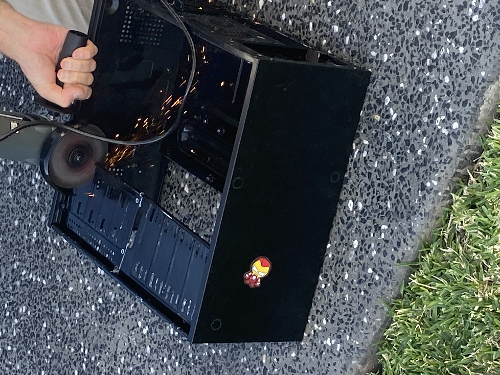
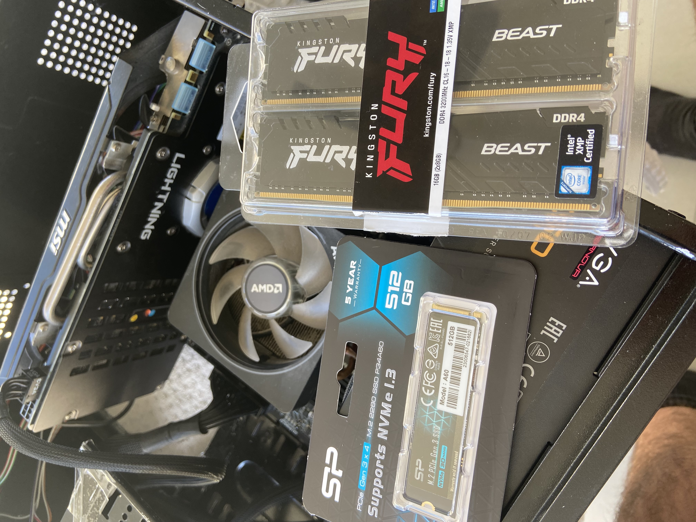
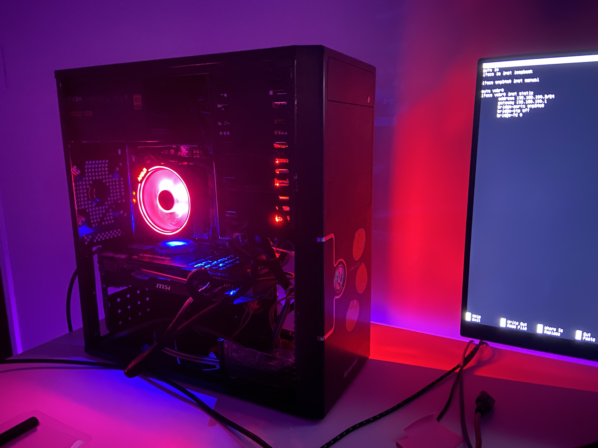
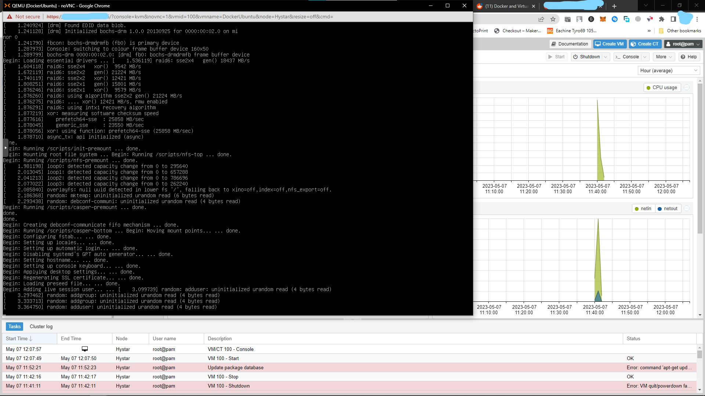

Proxmox Server!
Documenting my process of exploring homelabs and proxmox servers.
Project Overview
6/5/2023-ongoing
ToDo: keep documenting, format text properly
I was browsing reddit and a few weeks ago I discovered r/homelab and found it extremely interesting. I began following the community and reading up on as much as I could. After a week or so of researching and understanding how and what I would need to make my own, I began asking around and managed to get a computer off one of my good friends. It is extremely overkill for my use case of learning and messing around but it also gives me a lot of headroom. I ordered some parts that I needed and built the computer over the weekend. After dealing with some ram issues I managed to get the setup process for Proxmox running. I went through the process and assigned it a static IP address from my network so I wouldn't have any issues later. I logged in to the web GUI and began exploring the different menus and settings until I was confident enough to start setting up my own virtual machines. My first first virtual machine set up was ubuntu server to run my docker containers. I decided to go with a VM instead of a LXC so later down the line if I decided to open it up to the internet I would have more security and flexibilty. The VNC was a awesome feature and allowed me to run the ubuntu server setup quickly and flawlessly. This is where I'm up to at this time of writing, 7/5/2023. More to come...
Image Gallery

modifying a spare case to fit GPU.

New parts!

Finished server pc build.

VNC into the ubuntu server setup.